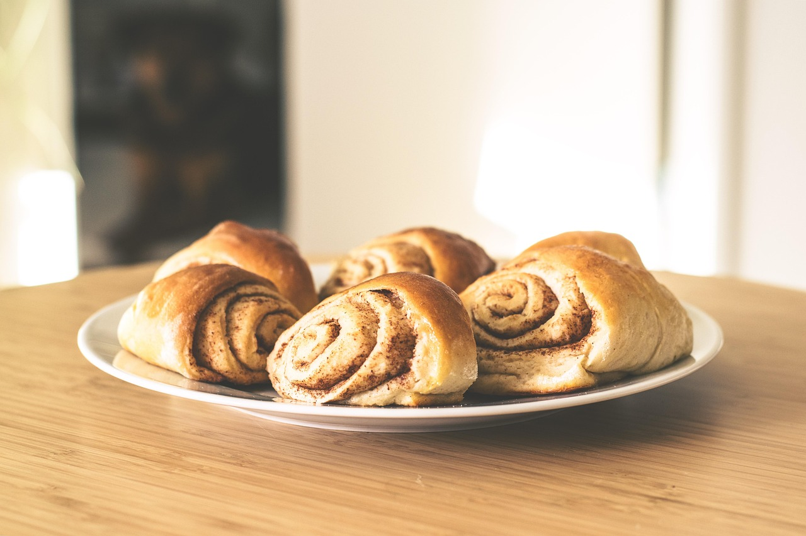

 60 Min.
60 Min.
 simple
simple
 02.03.2026
02.03.2026
Zutaten für
125
g Mehl4
g Trockenhefe25
g Zucker60
ml Milch (lauwarm)25
g Butter (weich)30
g brauner Zucker2
TL Zimt50
g PuderzuckerCa. 60
Minuten
Gesamtzeit Ca. 60
Minuten
Für eine kleine Portion Zimtschnecken gibst du zuerst das Mehl, den Zucker, die Trockenhefe und eine Prise Salz in eine Schüssel und vermischst alles kurz. Danach erwärmst du die Milch leicht, sodass sie nur lauwarm ist, und gibst sie zusammen mit der weichen Butter zu den trockenen Zutaten. Knete alles einige Minuten zu einem glatten Teig. Decke die Schüssel anschließend ab und lasse den Teig etwa 30 bis 60 Minuten gehen, bis er etwas aufgegangen ist. Anschließend rollst du den Teig auf einer leicht bemehlten Fläche zu einem Rechteck aus. Bestreiche den Teig mit der weichen Butter und verteile den braunen Zucker sowie den Zimt gleichmäßig darauf. Danach rollst du den Teig von der langen Seite her vorsichtig auf, sodass eine Rolle entsteht. Schneide die Rolle anschließend in etwa zwei bis drei Stücke. Lege die Zimtschnecken auf ein mit Backpapier belegtes Blech und backe sie im vorgeheizten Ofen bei etwa 180 °C für ungefähr 15 bis 20 Minuten, bis sie goldbraun sind. Wenn du möchtest, kannst du zum Schluss noch eine Glasur aus Puderzucker und etwas Milch anrühren und über die noch warmen Zimtschnecken geben.
Samuel